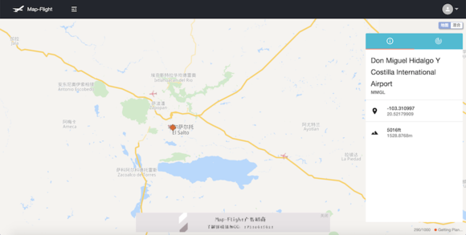

Map-Flight时间轴
Map-Flight开通时间轴页面了，在此你可以看到Map-Flight从创始至今所有重大事件的记录！这都将成为陪伴你和Map-Flight一起成长的最珍贵的回忆！
2019-08-20Map-Flight官网更新
Map-Flight网站这次更新增加了飞行轨迹的显示，现在Training Server和Expert Server可以看到飞行轨迹了！
2019-08-11Map-Flight官网优化
Map-Flight官网本周再一次地优化了性能，这次主要优化了地图的性能，现在手机版的地图操作基本不会卡顿了，估计性能提升达到了400%！
2019-08-10Map-Flight官网更新
Map-Flight网站这次是一次简单的小更新，主要是增加了机场的天气面板。
2019-08-10Map-Flight官网优化
Map-Flight网站后台优化了网络速度，现在航班只需要5秒即可显示！同时，获取ATC、飞行计划的时间比原来要提升80%-90%！
2019-08-08虚拟昆明航空官网接入Map-Flight
KYVA正式和Map-Flight开展合作，并接入Map-Flight服务到旗下官网！
2019-08-08虚拟国泰官网接入Map-Flight
IFCX正式和Map-Flight开展合作，并接入Map-Flight服务到旗下官网！
2019-07-24Map-Flight官网更新

Map-Flight网站这次更新了一下机场的信息卡，采用了更现代化的样式！
2019-07-24Android APP正式发布
Map-Flight Android APP 1.0.0版本正式发布了，现在已经可以在官网下载了！
2019-07-21Map-Flight官网更新
Map-Flight第二次界面重大更新，十分漂亮的航班信息界面！
2019-07-14Map-Flight官网更新
Map-Flight首次界面大更新，界面更加现代化了。
2019-06-21FGS官网接入Map-Flight
FGS正式和Map-Flight开展合作，并将Map-Flight服务接入到旗下官网！成为第二个接入Map-Flight的虚拟航空组织！
2019-06-20Map-Flight官网更新
Map-Flight网站第二次更新，具体有以下更新内容：
- 增加了机场显示功能
- 增加了目的地航线标注
Map-Flight官网更新
这是Map-Flight网站第一次更新，具体有以下更新内容：
- 导航栏Map-Flight文字变为白灰色
- 航班计划未获取成功时也可以打开航班信息页面！（只是部分信息无法显示）
- 所有请求全部改为GET
Mac App正式发布
我们在6月2号正式发布了Map-Flight Mac App 1.0.0版，它能带给Mac用户提供更为方便快捷的Map-Flight使用体验。
2019-06-02Map-Flight正式确定
Map-Flight开发组初步确立web网站样式及具体功能（参考了一部分Live Flight的功能），并且购买了域名及服务器，同时正式开始着手开发Map-Flight网站。
2019-05-02